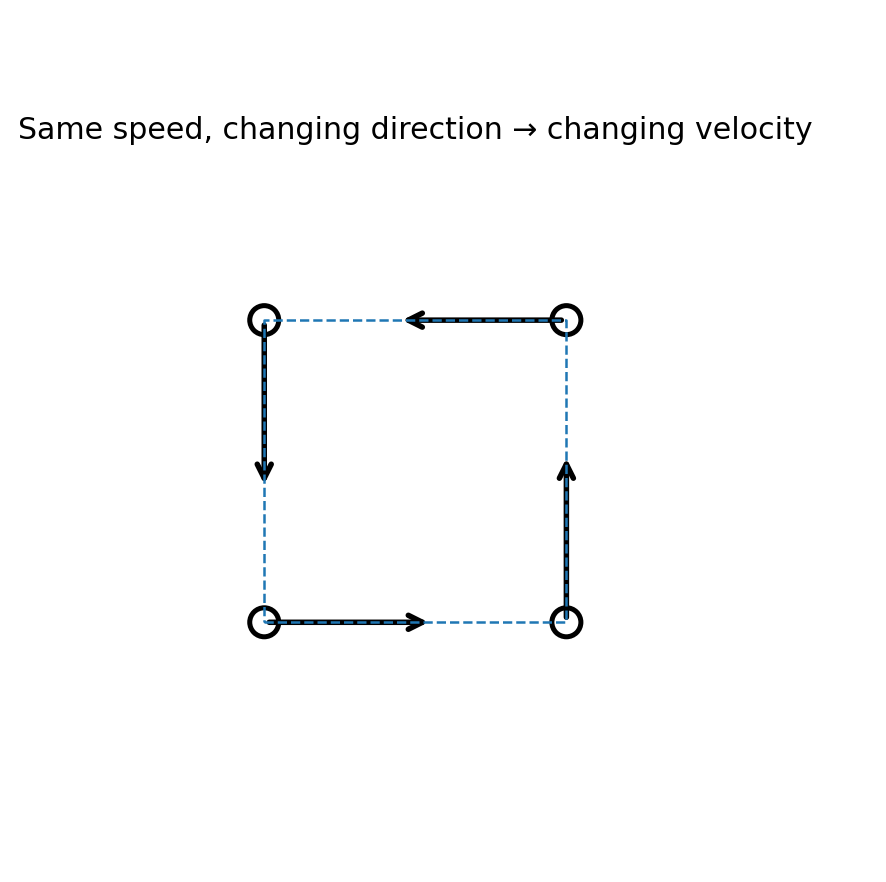
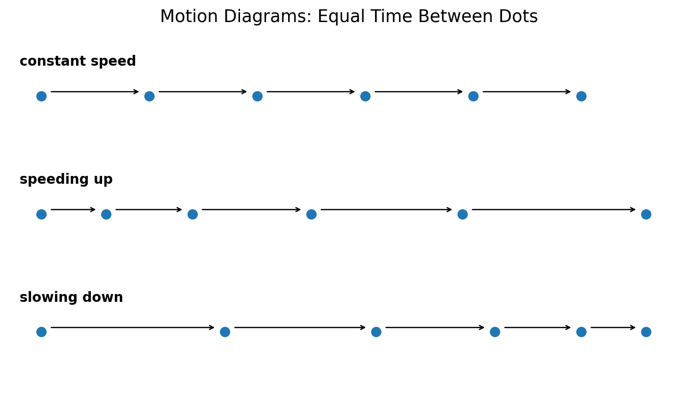
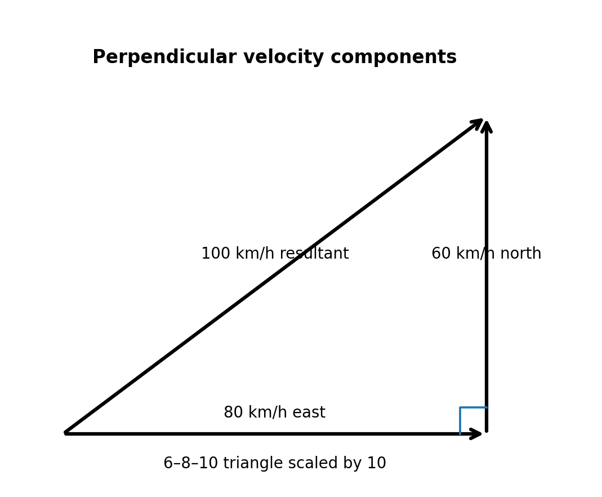

Velocity Vectors and Motion Modeling
- I can represent velocity with arrows that show both speed and direction.
- I can compare velocity vectors to determine whether an object’s velocity is changing.
- I can connect motion diagrams, data tables, and graphs to written descriptions of motion and critique an incorrect motion model and revise it using evidence.
Sort before reading. Place each term where it best fits your current understanding.
A useful motion model must preserve the quantities that matter. For velocity, two pieces of information matter at the same time: magnitude (speed) and direction. A velocity vector represents both with an arrow. The arrow points in the motion direction, and its length represents velocity magnitude when a scale is being used.
A velocity vector is therefore not just an arrow showing direction. If two vectors point the same direction but have different lengths, they represent different speeds. If two vectors have the same length but point different directions, the speed can be the same while velocity changes. Both features must match for two vectors to represent the same velocity.
Situation: Construct a velocity vector for an object moving left at 5 m/s.
- Point the arrow left because the motion direction is left.
- Choose a scale, such as 1 cm representing 1 m/s.
- Draw the arrow 5 scale units long.
Result: The vector’s direction and length together represent 5 m/s left.
Construct a velocity vector for an object moving downward at 6 m/s. Explain what the arrow direction and length represent.
Comparing Velocity Vectors
Comparing vectors is one way to decide whether velocity changes. Look first at length, then at direction. A length change means speed changed. A direction change means direction of motion changed. Either one is enough to make the velocity different and therefore indicates acceleration over the interval.

The vectors in the turning diagram have equal lengths, so the modeled speed can remain constant. Their directions change, so velocity changes. This is the same reasoning used for constant-speed motion around a curve.
Situation: Vector A is 4 cm long and points east. Vector B is 4 cm long and points north.
- Compare lengths: equal lengths can represent equal speeds.
- Compare directions: east and north are different.
- Velocity requires both magnitude and direction.
Result: Velocity changed because direction changed.
Vector A is 3 cm long and points south. Vector B is 5 cm long and points south. Compare the two velocities and identify what changed.
Motion Diagrams Tell a Time Story
A motion diagram places successive positions at equal time intervals. Dot spacing reveals speed changes, while arrows can add velocity information. Equal spacing in a straight line can represent constant velocity. Increasing spacing in the same direction represents increasing speed. A curved path can show changing direction even when spacing remains similar.

Graphs Are Another Model of the Same Motion
A position–time or distance–time graph emphasizes how location changes with time. A velocity–time graph emphasizes how velocity changes with time. Strong modelers move among representations rather than memorizing each one separately. Ask what physical story the graph tells: Is the object moving? Is it moving faster or slower? Does direction change? Is velocity constant?

For a distance–time graph, steeper segments represent greater speed and flat segments represent no increase in distance from the start. For a velocity–time graph, a horizontal line means constant velocity, while a sloped line means velocity changes and acceleration is present.
Velocity Components Can Combine
Sometimes one motion has useful perpendicular components. An airplane can have one velocity component east and another north. These can be combined into a single resultant velocity. For perpendicular components, a right triangle can represent the relationship.

Situation: An airplane has an 80 km/h east velocity component and a 60 km/h north component.
- Draw the 80 component east.
- From its tip, draw the 60 component north.
- The resultant connects the starting point to the final tip.
- Because 60–80–100 is a scaled 3–4–5 right triangle, the resultant magnitude is 100 km/h.
Result: The combined velocity is 100 km/h toward the northeast.
A model shows one component 30 m/s east and another 40 m/s north. Draw the vector triangle and determine the resultant magnitude using the 3–4–5 pattern.
Good Models Agree with One Another
A written description, data table, motion diagram, and graph should all tell the same physical story. If the words say “constant speed” but a motion diagram shows increasing spacing at equal time intervals, the representations conflict. If a graph shows constant velocity but the vector arrows change length, something must be revised.
Critiquing a model means identifying the evidence that does not match the stated motion and then changing the representation so it does. A strong correction is specific: say what feature is wrong, what physical quantity that feature represents, and how to revise it.
Choose the Representation That Helps
No single representation is best for every question. Words are useful for context; diagrams make spatial patterns visible; vectors keep magnitude and direction together; tables organize measured values; graphs reveal patterns over time. The strongest physics explanations often use two representations and show that they agree.